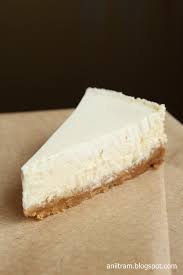

Toorjuustukook

| Koostisosad |
Kogused |
| küpsis |
8 tk |
| või |
50 g |
| toorjuustu |
400 g |
| suhkur |
75 g |
| muna |
2 |
| vanillisuhkur |
0.5tl |
- Samm 1
Sega purustatud küpsised ja sulatatud või. Suru küpsisepuru 22-24 cm läbimõõduga lahtikäiva koogivormi põhjale. Pane külmkappi ootele.
- Samm 2
Valmista täidis. Sega kõik ained omavahel, soovi korral vahusta kergelt mikseriga. Vala täidis küpsisepõhjale ja küpseta 180kraadises ahjus u 30 minutit, kuni mass on enam-vähem hüübinud. Siis võta kook ahjust välja ja lase 20 minutit jahtuda.
- Samm 3
Sega hapukoor, suhkur ja vanill, vala ettevaatlikult jahtunud koogile. Küpseta 230kraadises ahjus 5-7 minutit, kuni on näha, et hapukoorekiht on pealt veidi kuivemaks muutunud.
- Samm 4
Lase enne serveerimist põhjalikult jahtuda.